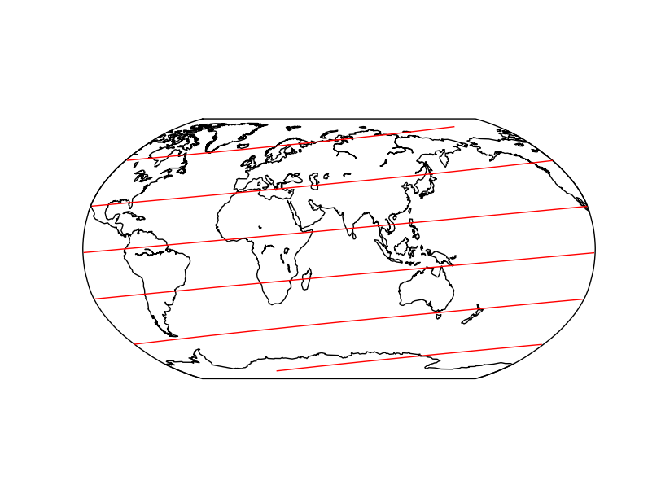

Global line data is often jumping from one half of the globe to another.

To avoid this, we can split our lines into segments. Large jumps in longitude provide the indices where the line is split.
#!/usr/bin/env python
import numpy as np
import matplotlib.pyplot as plt
from mpl_toolkits.basemap import Basemap
# create line that spirals from south to north around the globe
lons = np.linspace(0.,2000.,1000)%360.
lats = np.linspace(-80.,80.,1000)
segment = np.vstack( (lons,lats))
# create a global map that is centered around longitude "lon0"
lon0=70.
fig = plt.figure()
m = Basemap(lon_0 = lon0,projection='robin')
m.drawmapboundary()
m.drawcoastlines()
# move longitude into the map region and split if longitude jumps by more
# than "threshold"
bleft = lon0-180.
bright = lon0+180.
segment[0,segment[0]> bright] -= 360.
segment[0,segment[0]< bleft] += 360.
threshold = 90.
isplit = np.nonzero(np.abs(np.diff(segment[0])) > threshold)[0]
subsegs = np.split(segment,isplit+1,axis=+1)
# plot the subsegments
for seg in subsegs:
x,y = m(seg[0],seg[1])
m.plot(x,y,c='red')
plt.show()Alternatively we can plot it as a LineCollection (add ax = fig.add_subplot(111) in the beginning):
# [...]
# isplit = np.nonzero(np.diff(segment[0]) > threshold)[0]
segment[0], segment[1] = m(segment[0],segment[1])
subsegs = np.split(np.transpose(segment),isplit,axis=0)
line = LineCollection(subsegs,antialiaseds=(True,))
ax.add_collection(line)
plt.show()This is the result:
